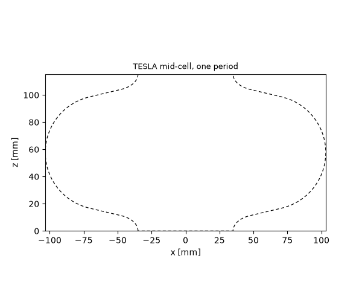
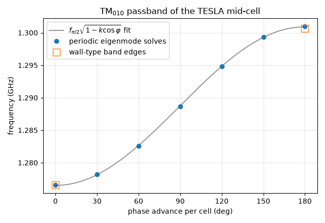
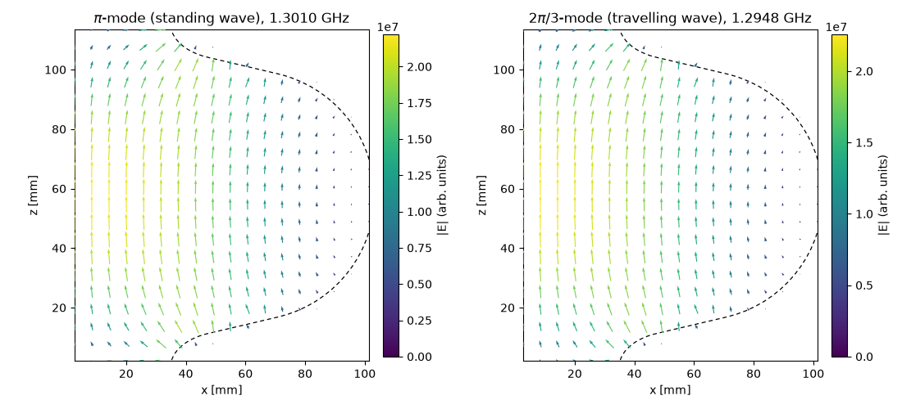

Note
Go to the end to download the full example code.
Periodic structures: the dispersion diagram of a TESLA cell#
Every cavity so far was a closed box with a discrete set of resonances. An accelerating structure is different: a chain of identical cells, coupled through their irises, and what matters is how the field in one cell relates to the field in the next. For an infinite chain that relation is Floquet’s theorem — the field in cell \(n+1\) is the field in cell \(n\) times a phase factor \(e^{-\mathrm j \varphi}\) — and the resonant frequency becomes a function of the phase advance \(\varphi\) per cell. That function, plotted over \(0 \le \varphi \le \pi\), is the dispersion diagram (or Brillouin diagram) of the structure.
This tutorial computes it for the mid-cell of the TESLA 9-cell
cavity, the 1.3 GHz superconducting resonator of the TESLA Test
Facility and, since then, of the European XFEL and LCLS-II. Two
things are new: a face pair declared "Periodic" with a phase
advance on the eigenmode analysis, and the cell’s outline — an
elliptical arc, a straight wall and a circular arc joined tangentially
— drawn with Path.
The cell#
The TESLA mid-cell is described by a handful of numbers (Aune et al., Phys. Rev. ST Accel. Beams 3, 092001 (2000), Table 3). Its half-cell contour, drawn in the \((z, r)\) plane from the iris plane to the equator plane, is:
an elliptical arc around the iris, centred on the iris plane at \(r = R_\mathrm{iris} + b\) with half-axes \(a = 12\) mm along the beam axis and \(b = 19\) mm radially, so the aperture is smallest exactly on the iris plane;
a circular arc of radius \(R_\mathrm{arc} = 42\) mm at the equator, centred below the equator point so the contour is flat there;
the straight wall between them, tangent to both.
quantity |
value |
|---|---|
equator radius |
103.3 mm |
iris radius |
35.0 mm |
circular-arc radius |
42.0 mm |
iris half-axis \(a\) |
12.0 mm |
iris half-axis \(b\) |
19.0 mm |
half-cell length |
57.7 mm |
The wall angle is not a free parameter: once the two curves are placed, the straight wall is their common tangent. A short root search finds the point on the ellipse whose tangent line touches the circle.
import math
import warnings
import matplotlib.pyplot as plt
import numpy as np
from scipy.optimize import brentq
import magnelio as mio
from magnelio import geo, plots
R_EQ, R_IRIS, R_ARC = 103.3e-3, 35.0e-3, 42.0e-3
A_IRIS, B_IRIS = 12.0e-3, 19.0e-3
L_HALF = 57.7e-3
PERIOD = 2.0 * L_HALF
# Centres in the (z, r) plane.
c_iris = (0.0, R_IRIS + B_IRIS)
c_eq = (L_HALF, R_EQ - R_ARC)
def on_ellipse(theta):
"""Point (z, r) on the iris ellipse; theta = -pi/2 is the iris tip."""
return (A_IRIS * math.cos(theta), c_iris[1] + B_IRIS * math.sin(theta))
def ellipse_tangent(theta):
"""Unit tangent (z, r) of the iris ellipse at theta."""
d = (-A_IRIS * math.sin(theta), B_IRIS * math.cos(theta))
n = math.hypot(*d)
return (d[0] / n, d[1] / n)
def tangent_gap(theta):
"""Distance of the circle centre from the ellipse's tangent line, minus R_ARC."""
p, t = on_ellipse(theta), ellipse_tangent(theta)
normal = (t[1], -t[0])
return (c_eq[0] - p[0]) * normal[0] + (c_eq[1] - p[1]) * normal[1] - R_ARC
theta = brentq(tangent_gap, -math.pi / 2 + 1e-6, -1e-6)
p_ell = on_ellipse(theta)
t_wall = ellipse_tangent(theta)
p_arc = (c_eq[0] - R_ARC * t_wall[1], c_eq[1] + R_ARC * t_wall[0])
wall_angle = math.degrees(math.atan2(t_wall[0], t_wall[1]))
print(f"wall leaves the ellipse at z = {p_ell[0] * 1e3:.2f} mm, r = {p_ell[1] * 1e3:.2f} mm")
print(f"wall meets the arc at z = {p_arc[0] * 1e3:.2f} mm, r = {p_arc[1] * 1e3:.2f} mm")
print(f"wall angle from the radial direction: {wall_angle:.2f} deg")
wall leaves the ellipse at z = 11.24 mm, r = 47.34 mm
wall meets the arc at z = 16.83 mm, r = 70.97 mm
wall angle from the radial direction: 13.31 deg
Drawing the profile#
The profile is drawn in the x-z plane (x plays the part of the radius) and revolved about z. The pen starts at the iris tip, follows the ellipse, the wall and the equator arc to the mid-plane, then retraces the same three segments mirrored for the second half of the cell. Two details from tutorial 14 apply:
each arc names its centre and a
normalto fix which way round it goes; on the way back the turning sense reverses, so the equator arcs takenormal=(0, -1, 0)where the iris arcs take"y";a profile must not touch the revolution axis. The outline is therefore closed slightly inside the iris radius, revolved into a ring, and united with a plain cylinder that supplies the beam tube and the axis.
def xz(zr):
"""(z, r) -> (x, y, z) with the radius along x."""
return (zr[1], 0.0, zr[0])
def mirrored(zr):
"""The same (z, r) point in the second half of the cell."""
return (PERIOD - zr[0], zr[1])
air = mio.Material.air()
pec = mio.Material.pec()
outline = (
geo.Path(xz((0.0, R_IRIS)))
.ellipse_to(
xz(p_ell), center=xz(c_iris), semi_axes=(A_IRIS, B_IRIS), major_axis="z", normal="y"
)
.line_to(xz(p_arc))
.arc_to(xz((L_HALF, R_EQ)), center=xz(c_eq), normal=(0.0, -1.0, 0.0))
.arc_to(xz(mirrored(p_arc)), center=xz(mirrored(c_eq)), normal=(0.0, -1.0, 0.0))
.line_to(xz(mirrored(p_ell)))
.ellipse_to(
xz((PERIOD, R_IRIS)),
center=xz(mirrored(c_iris)),
semi_axes=(A_IRIS, B_IRIS),
major_axis="z",
normal="y",
)
.line_to(xz((PERIOD, R_IRIS - 2e-3)))
.line_to(xz((0.0, R_IRIS - 2e-3)))
.closed()
.covered()
)
ring = outline.revolved(axis="z", material=air)
tube = geo.Cylinder(origin=(0, 0, 0), radius=R_IRIS, height=PERIOD, axis="z", material=air)
cell = geo.Union(ring, tube, material=air)
fig, ax = plots.plot_cross_section([cell], "y", 0.0, title="TESLA mid-cell, one period")

Unit cell, quarter model#
The model is one period of the chain: from one iris plane to the
next. Both z-faces are declared "Periodic" — the pair is the
statement that the structure continues identically beyond them. Two
mirror planes through the axis cut the work by four: the modes of
interest have their electric field in the r-z plane, which is
tangential to the planes x = 0 and y = 0, so the correct wall there
is the magnetic one (tutorial 09).
model = mio.GeometryModel(
background=pec,
boundary_conditions={
"xmin": "SymmetryPMC",
"ymin": "SymmetryPMC",
"zmin": "Periodic",
"zmax": "Periodic",
},
)
model.add(cell)
mesh = mio.Mesh.from_geometry(model, mio.MeshControl(max_cell_size=4e-3), f_max=1.5e9)
print(f"grid: {mesh.Nx} x {mesh.Ny} x {mesh.Nz} cells")
grid: 26 x 26 x 29 cells
Band edges the classical way#
Before the sweep, the two ends of the passband by the traditional route. At \(\varphi = 0\) every cell carries the same field, and the iris plane is a mirror plane across which the accelerating field \(E_z\) is even — a plane where the tangential electric field vanishes, i.e. an electric wall. At \(\varphi = \pi\) the field flips sign from cell to cell, \(E_z\) is odd across the iris plane and the wall there is magnetic. Two ordinary cavity solves, nothing periodic about them:
def lowest_mode(bcs):
half = mio.GeometryModel(background=pec, boundary_conditions=bcs)
half.add(cell)
m = mio.Mesh.from_geometry(half, mio.MeshControl(max_cell_size=4e-3), f_max=1.5e9)
return mio.AnalysisEigenmode(mesh=m, n_modes=1, verbose=False).run().frequencies[0]
mirror = {"xmin": "SymmetryPMC", "ymin": "SymmetryPMC"}
f_0_walls = lowest_mode({**mirror, "zmin": "PEC", "zmax": "PEC"})
f_pi_walls = lowest_mode({**mirror, "zmin": "PMC", "zmax": "PMC"})
print(f"electric walls on the iris planes (0-mode): {f_0_walls / 1e9:.4f} GHz")
print(f"magnetic walls on the iris planes (pi-mode): {f_pi_walls / 1e9:.4f} GHz")
electric walls on the iris planes (0-mode): 1.2766 GHz
magnetic walls on the iris planes (pi-mode): 1.3007 GHz
The sweep#
Everything in between needs the periodic pair. phase_advance_deg
on AnalysisEigenmode is the phase by which the
field in one period leads the next; the mesh is built once and the
analysis is repeated for each value. At 0 and 180 degrees the
problem is real; in between the mode fields are complex — travelling
waves — and the solver switches to a complex Hermitian formulation
without anything to configure.
phases = np.linspace(0.0, 180.0, 7)
freqs = []
for deg in phases:
result = mio.AnalysisEigenmode(mesh=mesh, n_modes=1, verbose=False, phase_advance_deg=deg)
with warnings.catch_warnings():
warnings.simplefilter("ignore", RuntimeWarning)
freqs.append(result.run().frequencies[0])
print(f"phase advance {deg:5.1f} deg: {freqs[-1] / 1e9:.4f} GHz")
freqs = np.array(freqs)
phase advance 0.0 deg: 1.2766 GHz
phase advance 30.0 deg: 1.2782 GHz
phase advance 60.0 deg: 1.2826 GHz
phase advance 90.0 deg: 1.2887 GHz
phase advance 120.0 deg: 1.2948 GHz
phase advance 150.0 deg: 1.2993 GHz
phase advance 180.0 deg: 1.3010 GHz
The dispersion diagram#
A chain of electrically coupled cells follows
(Wangler, RF Linear Accelerators, eq. 3.31), where the cell-to-cell coupling \(k\) is also the fractional width of the passband, \((f_\pi - f_0)/f_{\pi/2}\). Fitting the two parameters to the computed points checks the curve’s shape; the published values are 1.300 GHz for the \(\pi\)-mode and \(k = 1.87\,\%\).
phi = np.radians(phases)
design = np.column_stack([np.ones_like(phi), -np.cos(phi)])
coef, *_ = np.linalg.lstsq(design, freqs**2, rcond=None)
f_half = math.sqrt(coef[0])
k_cell = coef[1] / coef[0]
phi_fine = np.linspace(0.0, math.pi, 181)
f_fit = f_half * np.sqrt(1.0 - k_cell * np.cos(phi_fine))
print(f"pi-mode: {freqs[-1] / 1e9:.4f} GHz (design 1.3000 GHz)")
print(f"cell-to-cell coupling: {100 * k_cell:.2f} % (published 1.87 %)")
fig, ax = plt.subplots(figsize=(6.4, 4.4))
ax.plot(
np.degrees(phi_fine),
f_fit / 1e9,
color="0.6",
label="$f_{\\pi/2}\\sqrt{1 - k\\cos\\varphi}$ fit",
)
ax.plot(phases, freqs / 1e9, "o", label="periodic eigenmode solves")
ax.plot(
[0.0, 180.0],
[f_0_walls / 1e9, f_pi_walls / 1e9],
"s",
mfc="none",
ms=10,
label="wall-type band edges",
)
ax.set_xlabel("phase advance per cell (deg)")
ax.set_ylabel("frequency (GHz)")
ax.set_xticks(np.arange(0, 181, 30))
ax.set_title("TM$_{010}$ passband of the TESLA mid-cell")
ax.grid(alpha=0.3)
ax.legend()
fig.tight_layout()

pi-mode: 1.3010 GHz (design 1.3000 GHz)
cell-to-cell coupling: 1.89 % (published 1.87 %)
The band edges from the periodic solves land on the wall-type solves — the same two numbers by two routes, to a fraction of a permille (the wall-type models are meshed separately, and a magnetic wall pulls the grid in differently from a periodic face) — and the curve between them has the cosine shape the circuit model predicts. The \(\pi\)-mode, where the chain is operated, is the top of the band: the field reverses from cell to cell in the time a relativistic particle takes to cross one, which is what makes the period \(c/2f\).
The field: standing wave and travelling wave#
The TESLA cavity is operated in the \(\pi\)-mode (Aune et al., Table 2): the field reverses from cell to cell in the time a relativistic particle takes to cross one, which is what fixes the period at \(c/2f\). As a band edge it is a standing wave and, as the wall-type solve above showed, needs no periodic boundary at all. Every other point of the diagram is a travelling wave — the field pattern advances by \(\varphi\) per cell and the mode fields are complex — and exists only through the periodic pair. The \(2\pi/3\) phase advance is the textbook choice of travelling-wave linacs, so it serves as the example: the plot shows the real snapshot of its electric field next to the \(\pi\)-mode, both on the meridian plane of the quarter model. The standing wave is symmetric about the cell’s mid-plane; the travelling wave is not, and no combination of walls would produce it.
pi_mode = mio.AnalysisEigenmode(mesh=mesh, n_modes=1, verbose=False, phase_advance_deg=180.0).run()
tw_mode = mio.AnalysisEigenmode(mesh=mesh, n_modes=1, verbose=False, phase_advance_deg=120.0).run()
fig, axes = plt.subplots(1, 2, figsize=(11, 5.0))
for ax, res, label in (
(axes[0], pi_mode, "$\\pi$-mode (standing wave)"),
(axes[1], tw_mode, "$2\\pi/3$-mode (travelling wave)"),
):
res.plot(
mode=0, component="E", normal="y", position=0.0, plot_type="vector", geometry=model, ax=ax
)
ax.set_title(f"{label}, {res.frequencies[0] / 1e9:.4f} GHz")
fig.tight_layout()

Where to go next#
New in this tutorial: a "Periodic" face pair and
phase_advance_deg turn the eigenmode analysis into a unit-cell
solver for infinite periodic structures, and sweeping the phase
advance traces the dispersion diagram; elliptical arcs join the
profile vocabulary; and a tangent construction settles what a
parameter table leaves implicit. The same pair of declarations
serves any periodic structure whose unit cell fits in a box —
disk-loaded waveguides, photonic-crystal slabs, frequency-selective
surfaces at normal incidence.
Total running time of the script: (3 minutes 41.759 seconds)